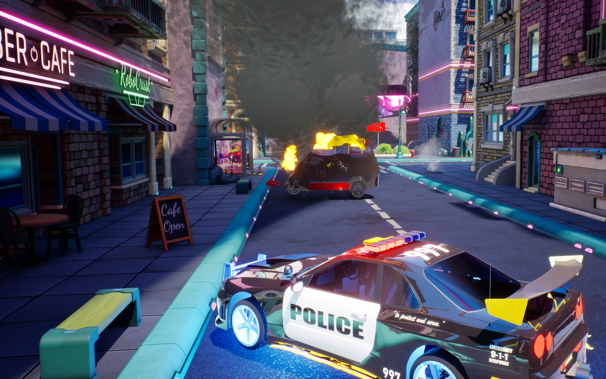

Smuggling kingpin “dies” in van blaze
Head of the city’s biggest parcel smuggling ring was, police say, personally driving a delivery van at 2am. Nobody can explain why. No body found either.

The man police call “the Kingpin” runs, by most accounts, the largest “no questions asked” parcel operation in the city. On Tuesday night he was apparently driving one of its vans himself. At 2am. On a route he had never driven before.
“Kingpins don’t do deliveries,” one detective told the Gazette. “That’s the whole point of being a kingpin.”
The van was found burning on an empty street. Fire crews say nobody was inside. Witnesses say the fire started “right on cue”.
A funeral was held within a day. Mourners described the coffin as “surprisingly light”. The bill was paid in cash and signed only “I.”
Fellow boss Dafydd is understood to have already ordered a crown. Sources say it is cardboard.
The studio says work on Shady Shipping carries on as normal. “He’d have wanted us to keep shipping,” said a spokesperson, who then asked if the Gazette knew any cheap flights.
Continued on page 404